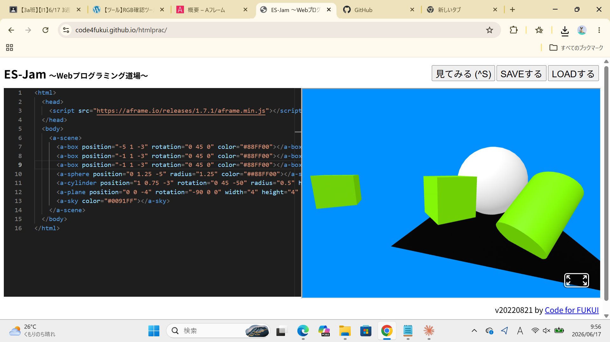
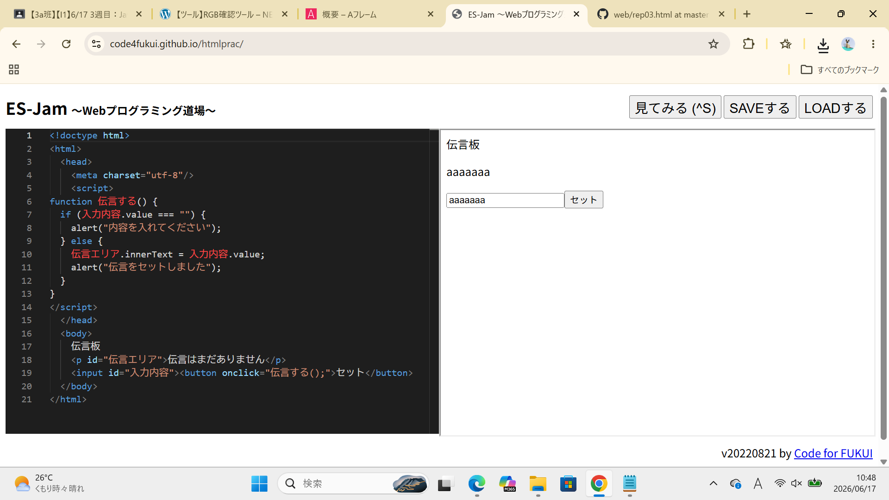

３週目のレポート ： 公大高専１年実習I-1
3a班7番 太田優真
第3週目
3-1 JavaScript体験：VR空間を作る

自作した３次元空間
1.内容
サンプルコードを自分たちで調整し、自分ならではのVR空間を作成し、
それを撮影し、レポートに反映させる。
2.感想
箱や円柱、地面から空まで全部を自分の好きなように調整することができ、
自分が望むような3D空間を作ることができた。
矢印キーで操作できるのも、視点移動ができるのも、色んな視点から物体を見ることができて、とてもよかった。
3-2 JavaScript体験：伝言プログラムを作る

伝言板
1.内容
javascriptという有名なプログラム言語を使い、if文や、alert,functionを用いて
簡易的なローカル保存の伝言板を作成する。
2.感想
自分は一回javascriptを学んだことがあり、いい振り返りになったと思う。簡単で、それなりに実用的な
伝言板がつくれたのはとても 良いと思った。
各ページへのリンク
1週目のレポート
2週目のレポート
3週目のレポート
私のホームページ